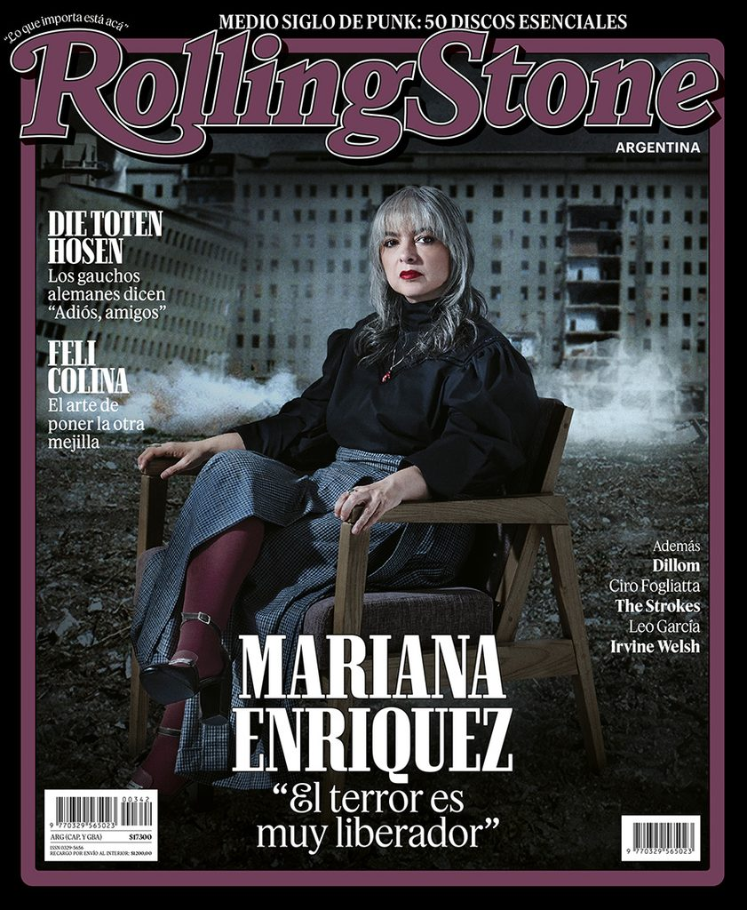

Portada
Mariana Enríquez presenta en España su ensayo sobre el terror
Marolyn Regueiro ·
Sección
Terror latino, escena y ruido: notas relacionadas sobre el mapa contemporáneo del género.

Portada
Marolyn Regueiro ·

Gótico andino
Marolyn Regueiro ·

Terror de lo cotidiano
Marolyn Regueiro ·